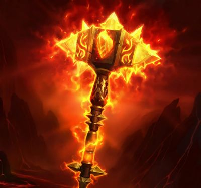

Le Coeur du Magma (ou Molten Core en anglais) fût le premier raid du jeu. Il s'agissait d'un évènement majeur puisque c'était la première fois dans l'histoire du jeu vidéo que 40 joueurs pouvaient se rejoindre au même endroit pour combattre les mêmes monstres en unissant leurs forces.
En plus des ensembles d'armures, le boss final de cette instance: le seigneur du feu "Ragnaros", permettait aux joueur chanceux d'obtenir la première arme légendaire du jeu, Sulfuras (le marteau légendaire du seigneur)

Le fameux artefact tant convoité à l'époque de World of Wacraft Classic